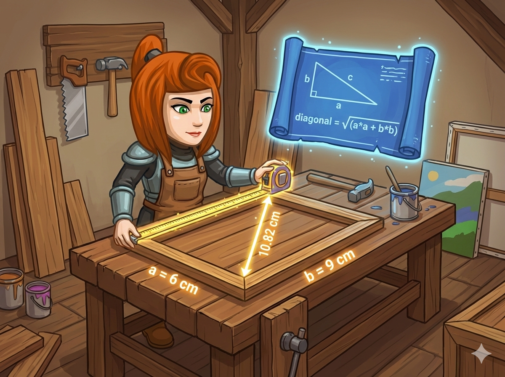

森林小镇的小画家小明 🎨 完成了一幅漂亮的长方形画作。 为了让画框更结实，他想在背面加一根 对角线 木条。
可是，木条该锯多长呢？🤔
英雄告诉他：“这其实是一个数学问题！只要用 勾股定理，就能算出长度啦！”
👉 任务： 读入长方形的 长(a) 和 宽(b)，计算对角线长度，并保留 2位小数。
这道题需要用到两个超酷的魔法：数学公式 和 格式控制。
c = √(a² + b²)
对角线 = 开根号( 长×长 + 宽×宽 )
小明已经在等你的计算结果了，快写代码吧！
#include <iostream> #include <cmath> // 📐 数学工具箱 (sqrt, pow) #include <iomanip> // 🎨 格式工具箱 (setprecision) using namespace std; int main() { // 1️⃣ 声明变量并输入 int a, b; cin >> a >> b; // 2️⃣ 计算：先算平方和，再开根号 // sqrt 是开根号，a*a 是平方 double result = sqrt(a*a + b*b); // 3️⃣ 输出：设置“保留2位小数”的魔法 cout << fixed << setprecision(2) << result << endl; return 0; }
import math # 📐 导入数学工具包 # 1️⃣ 输入：读取长和宽 a, b = map(int, input().split()) # 2️⃣ 计算：先平方求和，再开根号 # math.sqrt() 是开根号，** 2 是平方 diagonal = math.sqrt(a ** 2 + b ** 2) # 3️⃣ 输出：保留两位小数 # :.2f 的意思就是“保留2位小数” print(f"{diagonal:.2f}")
⭐ 关键点： 计算机不认识数学书上的 √x 符号，我们要用函数 sqrt() 来代替它！